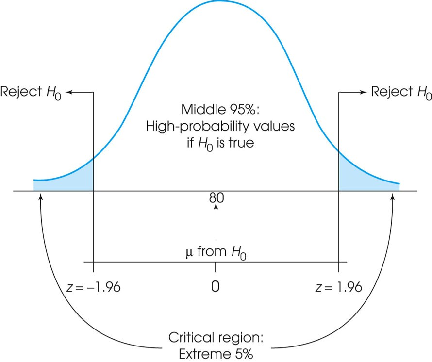
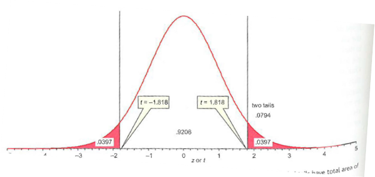
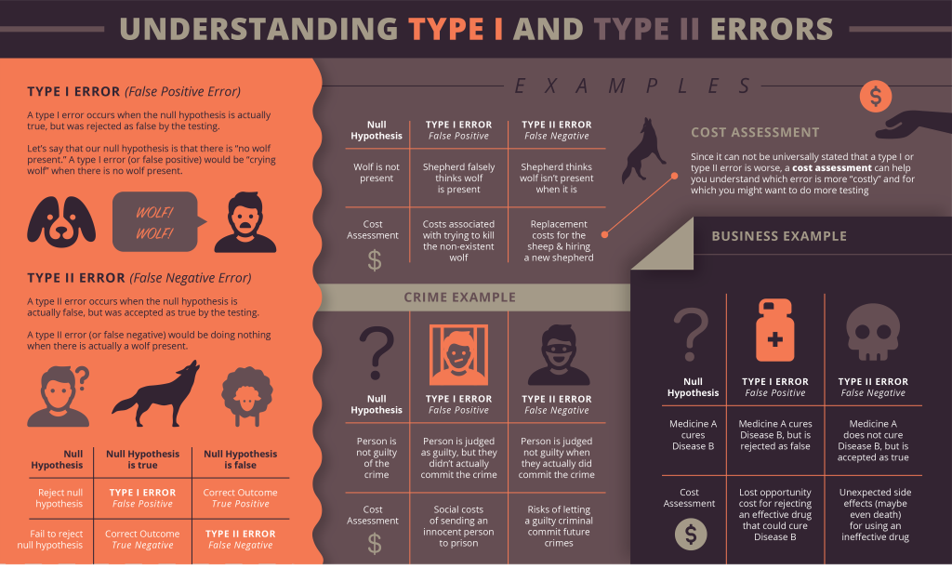
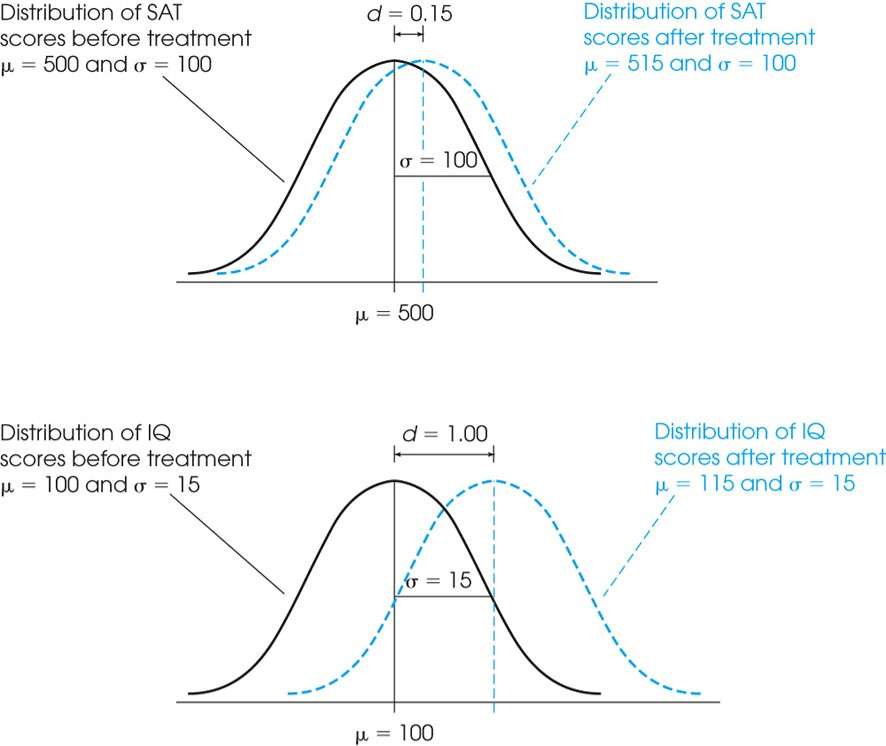
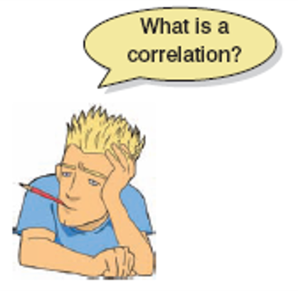
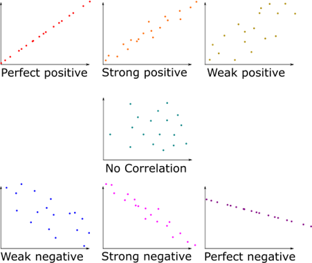
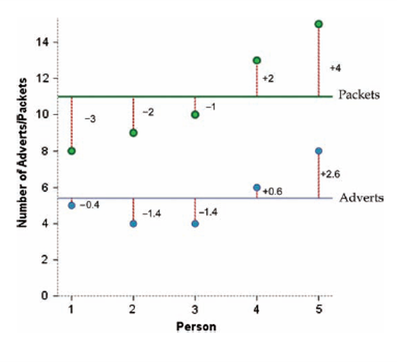
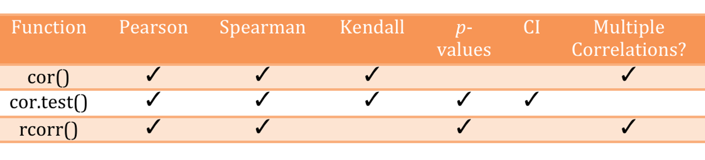
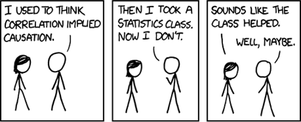

Introduction
Correlation
Statistics for CSAI II
Travis J. Wiltshire, Ph.D.
Outline
What we will cover today:
- Hypothesis Testing Revisited
- Correlation
Quiz
Question 1
Results
1. Which of the following models shows orthogonal polynomial regression with a quadratic term?
Question 2
Results
2. Which of the following is the most accurate interpretation of ICC in mixed modeling?
Question 3
Results
3. Which of the following is true regarding growth curve modeling and mixed effects modeling?
Hypothesis testing
What is a hypothesis?
- A formal statement predicting the relationship between two or more
variables.
- The number of hours spent studying will improve student’s grades in a course.
- Playing video games more often will lead to stronger social relationships in teenagers.
- Higher instances of communication breakdowns in teams will lead to poorer teamwork performance.
Hypothesis Testing
- The general goal of a hypothesis test is to rule out chance
(sampling error) as a plausible explanation for the results from a
research study.
- Hypothesis testing is a technique often used to help determine
whether a specific treatment has an effect on the individuals in a
population.

Null and Alternative Hypotheses
- Convert the research question to null and alternative hypotheses
- The null hypothesis (H0) is a claim of “no
difference in the population”
- Or an effect is zero
- The alternative hypothesis (Ha) claims “H0 is false”
- Collect data and seek evidence against H0 as a way of bolstering Ha (deduction)
Critical regions


Critical regions

Z-test in R
- Randomly generate a vector in R from a normal distribution with mean of 55.4, n=30,sd=5.
- Install and load the BSDA package
- Check out the arguments for the
z.test()function - Come up with a null hypothesis and alternative hypothesis regarding your randomly generated vector using the following population parameters: H0 : μ0 = 50, σ = 20
- Use the
z.test()function to test your hypothesis - Read the output and make a decision about the null hypothesis
Load
In this online coding environment it’s not needed to load the data, because they are pre-loaded. However, do not forget to load the data and libraries when running R studio on your computer!
#Require BSDA
# Generate a vector from a random normal distribution with a certain mean and standard deviation
# Generate a z statistic and results#code to generate a vector from a random normal distribution with a certain
#mean and standard deviation
x<-rnorm(n=30,mean=55.4,sd=5)
# Generate a z statistic and results
z.test(x=x,sigma.x=20,mu=50,conf.level=0.95,alternative='greater')Using the t distribution when population SD is unknown
- S is our sample SD
\[t-statistic=\frac{\overline{x}-\mu_{0}}{\frac{S}{\sqrt{n}}}\]

T-test in R
- Again, create a vector in R from a normal distribution with mean of 55.4, n=30,sd=5.
- Check out the arguments for the
t.test()function - Come up with a null hypothesis and alternative hypothesis regarding your randomly generated vector using the following population parameter: H0 : μ0 = 50
- Use the
t.test()function to test your hypothesis - Read the output and make a decision about the null hypothesis
- How does this compare to your z.test?
- What about the CIs?
Code to generate a t-statistic and results
#code to generate a t statistic and results# code to generate a t statistic and results
x<-rnorm(n=30,mean=55.4,sd=5)
t.test(x=x,mu=50,conf.level=0.95,alternative='greater')Errors in Hypothesis Tests
- Just because the sample mean (following treatment) is different from
the original population mean does not necessarily indicate that the
treatment has caused a change or that there is an effect.
- You should recall that there usually is some discrepancy between a sample mean and the population mean simply as a result of sampling error.

Measuring Effect Size
- Because a significant effect does not necessarily mean a large
effect, it is recommended that the hypothesis test be accompanied by a
measure of the effect size.
- For mean comparisons we typically use Cohen’s d as a standardized
measure of effect size.
- Much like a z-score, Cohen’s d measures the size of the mean difference in terms of the standard deviation.

Effect Size

Effect size exercises
- Install/load the ‘psych’ package
- Read about the
cohen.d()function - Load the sat.act data from the psych package into your global env.
- Calculate the effect size that gender has on each of the variables in the sat.act dataset
- What do the effect sizes tell you?
Code for effect size example
In this online coding environment it’s not needed to load the data, because they are pre-loaded. However, do not forget to load the data and libraries when running R studio on your computer!
#code to generate effect size sample
head(sat.act)# code to generate a effect size sample
library(psych)
cohen.d(sat.act,"gender")
cd <- cohen.d.by(sat.act,"gender","education") #Compound effect sizes
summary(cd) #summarize the outputHypothesis Testing and a Model Based Approach
- Data = Model + Error
- Comparison (relationship) vs Prediction (predicted outcomes vs predicting relationship vs using the model for prediction)
Hypothesis Testing in a Model-Based Framework

Test ideas

Correlation
Outline
- Measuring relationships
- Scatterplots
- Covariance
- Pearson’s correlation coefficient
- Nonparametric measures
- Spearman’s rho
- Kendall’s tau
- Interpreting correlations
- Causality
- Partial correlations
What is a correlation?
- It is a way of measuring the extent to which two variables are related.
- It measures the pattern of responses across variables.

Different types of relationships

www.guessthecorrelation.com
- www.guessthecorrelation.com
Measuring Relationships
- We need to see whether as one variable increases, the other increases, decreases or stays the same.
- This can be done by calculating the
covariance.
- We look at how much each score deviates from the mean.
- If both variables deviate from the mean by the same amount, they are likely to be related.


Revisiting the Variance
- The variance tells us by how much scores deviate from the mean for a single variable.
- It is closely linked to the sum of squares.
- Covariance is similar – it tells is by how much scores on two variables differ from their respective means.
\[variance = \frac{\sum_{i=1}^{n}(x_i - \mu)^2} {N-1}\] - Sum of squared errors (deviations from the mean) - Square to avoid values canceling each other out when summing.
Covariance
- Calculate the error between the mean and each subject’s score for the first variable (x).
- Calculate the error between the mean and their score for the second variable (y).
- Multiply these error values.
- Add these values and you get the cross product deviations.
- The covariance is the average cross-product deviations:
\[cov_{x,y}=\frac{\sum_{i=1}^{N}(x_{i}-\bar{x})(y_{i}-\bar{y})}{N-1}\]
Calculating example
\(cov_{x,y}=\frac{\sum(x_{i}-\bar{x})(y_{i}-\bar{y})}{N-1}\\=\frac{(-0.4)(-3)+(-1.4)(-2)+(-1.4)(-1)+(0.6)(2)+(2.6)(4)}{4}\\=\frac{1.2+2.8+1.4+1.2+10.4}{4}\\=\frac{17}{4}\\=4.25\)
Covariance Exercises
- Create two variables in R:
- Ads with values 5,4,4,6,8
- Packets with values 8, 9, 10, 13, 15
- Use the
cov()function to calculate the covariance of ads and packets
1. Creating two variables
## creatge variables
# Calculate the covariance of two variablesads<-c(5,4,4,6,8)
packets<-c(8,9,10,13,15)
cov(ads,packets)Problems with Covariance
- It depends upon the units of measurement.
- E.g. the covariance of two variables measured in miles might be 4.25, but if the same scores are converted to kilometres, the covariance is 11.
- One solution: standardize it!
- Divide by the standard deviations of both variables.
- The standardized version of covariance is known as the
correlation coefficient.
- It is relatively unaffected by units of measurement.
- BONUS: We can manually standardize variables to put them on the same scale by subtracting the mean from each value and dividing by the standard deviation (turning them into z-scores).
\[ r =\frac{ cov_{xy} }{s_{x}s_{y}}\]
\(r = \frac{ cov_{xy} }{s_{x}s_{y}}\\=\frac{4.25}{1.67 \times 2.29}\\= .87\)
Standardizing and Correlation Exercises
- Create new variables by standardizing both variables below using the
scale()function:- Ads
- Packets
- Use the
cov()function to calculate the covariance of the standardized versions of ads and packets - Use the
cor()function to calculate the correlation of ads and packets
Testing out standardization of variables
#Require
ads<-c(5,4,4,6,8)
packets<-c(8,9,10,13,15)
# Create new standardized variables
### Calculate the correlation coefficientsstd_ads<-scale(ads)
std_packets<-scale(packets)
cov(std_ads,std_packets)
#correlation coefficients
cor(ads,packets, method="pearson")Things to Know about the Correlation
- It varies between -1 and +1
- 0 = no relationship
- It is an effect size
- ±.1 = small effect
- ±.3 = medium effect
- ±.5 = large effect
- Coefficient of determination, \(r^{2}\)
- By squaring the value of r you get the proportion of variance in one variable shared by the other.

General Procedure for Correlations Using R
- To compute basic correlation coefficients there are three main
functions that can be used:
cor()cor.test()rcorr()

Hypothesis testing with correlations
- We can use
cor.test()to test the null hypothesis that the correlation in the population is 0. - And we can also specify our alternative for whether there should be a negative relationship (alternative =‘less’) or positive association (alternative=‘greater’)
- Also provides p-values, and CIs
Correlation Testing Exercises
- Use the
cor.test()function to calculate the correlation of ads and packets - Use the
cor.test()function to calculate the correlation of ads and packets predict a negative association - Use the
cor.test()function to calculate the correlation of ads and packets predict a positive association
What do these results suggest to you? Is the correlation between these variables significant?
Testing the correlation, obtaining a p-value and CIs and making a prediction about positive or negative relationships
#Require
ads<-c(5,4,4,6,8)
packets<-c(8,9,10,13,15)cor.test(ads,packets, method="pearson")
cor.test(ads,packets, method="pearson",alternative = "less")
cor.test(ads,packets, method="pearson",alternative = "greater")Correlation and Causality
- The third-variable problem:
- In any correlation, causality between two variables cannot be assumed because there may be other measured or unmeasured variables affecting the results.
- Direction of causality:
- Correlation coefficients say nothing about which variable causes the other to change.
Check this out for some interesting spurious correlations: https://tylervigen.com/discover

More Correlation Testing Exercises
- Load the Exam Anxiety.dat file into R using
read.delim()function- 103 participants, variables indicated Time spent revising (hours), Exam performance (%), Exam Anxiety (the EAQ, score out of 100), Gender
- Make a prediction about the relationship between exam performance
and anxiety and test it using the
cor.test()function- What did you observe? Was there a significant correlation? What is the size (small, medium, large)? -What is the r2 value? What does this mean?
- Generate an exploratory correlation matrix using the
correlate()function from thelsrpackage. How do you interpret this?
1. Load the Exam Anxiety dataset and do a correlation test
The exam anxiety dataset is pre-loaded in a variable called exam_data.
In this online coding environment data and libraries are pre-loaded. However, do not forget to load the data and libraries when running R studio on your computer
#exam_data=read.delim("data/Exam Anxiety.dat")
head(exam_data)
# Relation between Revising and Anxiety
# Generate a correlation matrixcor.test(exam_data$Exam, exam_data$Anxiety, method = "pearson", alternative='less')
### Relation between Revising and Anxiety
cor.test(exam_data$Revise, exam_data$Anxiety, method = "pearson", alternative='less')
#Generate a correlation matrix
correlate(exam_data)Reporting results of a correlation
- Exam performance was significantly correlated with exam anxiety, r = .44, and time spent revising, r = .40; the time spent revising was also correlated with exam anxiety, r = .71 (all ps < .001).
- Remember it is best to report exact p-values, but these are all very very small.
Conculsion
Summing up
- Correlations
- Positive, negative and range from -1 to 1
- Small, medium, large effects
- Not causal
Thanks!
See you next week! Questions?
Summing Up